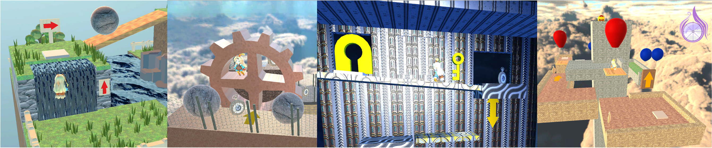

逆行タイムズ
ブラウザゲーム

ゲーム, WebGL
使用技術
- Unity (C#, WebGL)
- CI/CD (GitHub Actionsによる自動ビルド&デプロイ)
GitHub リポジトリ: 逆行タイムズ
概要
本作では、時間を巻き戻す能力を単なるやり直し機能ではなく、ステージ攻略のためのゲームシステムとして活用しています。プレイヤーは時間の流れそのものを操作しながら、通常では進めない場所へ道を切り開き、お宝を目指します。
時間操作による試行錯誤と発見の楽しさを体験できる3Dパズルアクションゲームです。
下の画像をクリックするとブラウザ上で「逆行タイムズ」がプレイできます。
関連リンク